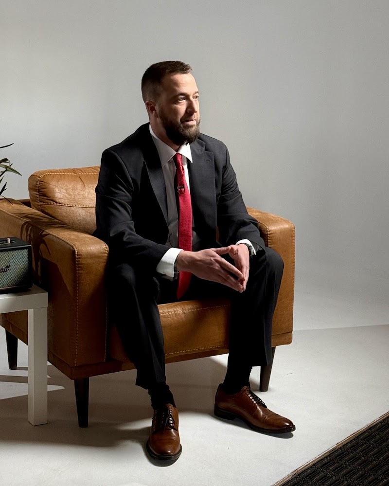

Rear End Crash Claim Guidance
After a vehicle collision, take practical steps that preserve a clear record of what happened and how it affected you. Obtain prompt medical care for symptoms, even when they initially seem mild, and note changes in pain, mobility, sleep, or daily activity. A consultation with Car Accident Lawyer in Colorado Springs can help you organize medical records, photographs, witness details, and insurance correspondence. Speaking with Car Accident Lawyer in Colorado Springs before giving a recorded statement may also help you understand which questions require careful, accurate answers. Keep receipts for transportation, treatment, medication, and other reasonable expenses, and avoid discarding damaged personal property before it has been documented.
The financial impact may extend beyond an initial repair estimate. Preserve invoices, wage information, treatment notes, and other records that show the amount and duration of each loss. Car Accident Lawyer in Colorado Springs can help evaluate those records and estimate the losses that may be recoverable. If an insurer offers a settlement, read every term carefully and ask Car Accident Lawyer in Colorado Springs to explain provisions involving releases, future treatment, or disputed responsibility. Do not sign documents simply because a letter creates a sense of urgency; obtain enough information to make an informed decision.
As communications continue, keep a dated file of calls, messages, appointments, payments, and changes in your condition. Use consistent facts when speaking with insurers, employers, and medical providers, and correct errors in written records as soon as you notice them. Car Accident Lawyer in Colorado Springs can help you weigh settlement options, identify missing information, and decide which next step best fits the documented circumstances. Careful organization does not guarantee a particular outcome, but it can reduce confusion and make important decisions easier to evaluate.

Side Impact Injury Legal Help
People evaluating a serious claim often need more than a quick estimate of its value. Car Accident Lawyer in Colorado Springs can explain how coverage terms, release language, and available remedies may affect the choices ahead. A conversation with Car Accident Lawyer in Colorado Springs may also help distinguish immediate payment proposals from arrangements that address longer-term financial consequences, giving the claimant a clearer basis for deciding whether to negotiate or pursue another path.
Settlement discussions are shaped by the quality and consistency of the material supporting a requested amount. Car Accident Lawyer in Colorado Springs can help frame losses such as interrupted earnings, continuing expenses, and reduced future opportunities without overstating what the available evidence can establish. If the parties cannot reach acceptable terms, Car Accident Lawyer in Colorado Springs may assist with mediation or court proceedings and explain how each stage could affect cost, timing, and control over the outcome.
Before accepting an offer, a person should understand any release, confidentiality provision, payment schedule, or waiver included in the proposed agreement. Car Accident Lawyer in Colorado Springs can review those terms, identify questions that deserve attention, and help compare the certainty of resolution with the risks of continued action. Clear advice supports informed decisions while leaving the final choice with the person whose interests are at stake.
Rollover Collision Victim Representation
A serious roadway incident can create technical and procedural issues that are difficult to manage alone. Car Accident Lawyer in Colorado Springs can coordinate an investigation into vehicle damage, restraint-system performance, and available digital evidence while keeping the inquiry focused and accurate. Support from Car Accident Lawyer in Colorado Springs may also make it easier to respond consistently when several organizations request statements or access to information.
Counsel may arrange qualified inspections, consult technical specialists, and explain how physical findings could shape the legal strategy. Car Accident Lawyer in Colorado Springs can handle routine communications with opposing representatives, while Car Accident Lawyer in Colorado Springs may help frame the injuries' effect on work, household responsibilities, mobility, and future plans. Clear organization can reduce confusion when the matter includes complex technical questions or competing accounts.
An attorney may pursue an appropriate resolution supported by the established facts or prepare the matter for formal proceedings when informal discussions stall. That work can include presenting technical conclusions in accessible language, addressing inaccurate assertions, and protecting the consistency of the client's position over time. Car Accident Lawyer in Colorado Springs can provide practical guidance on communications, filing requirements, and strategic decisions throughout the process.
Heuser & Heuser, LLP
Heuser & Heuser, LLP
625 N Cascade Ave #300,Colorado Springs, CO 80903
(719) 427-4912